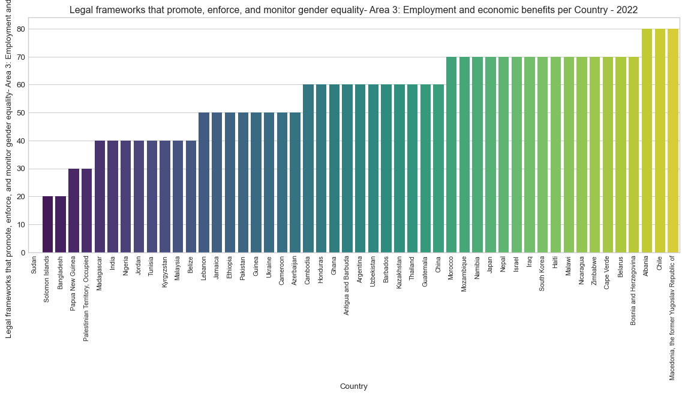
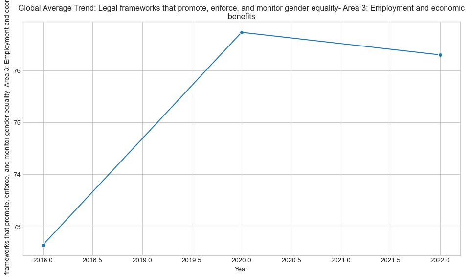
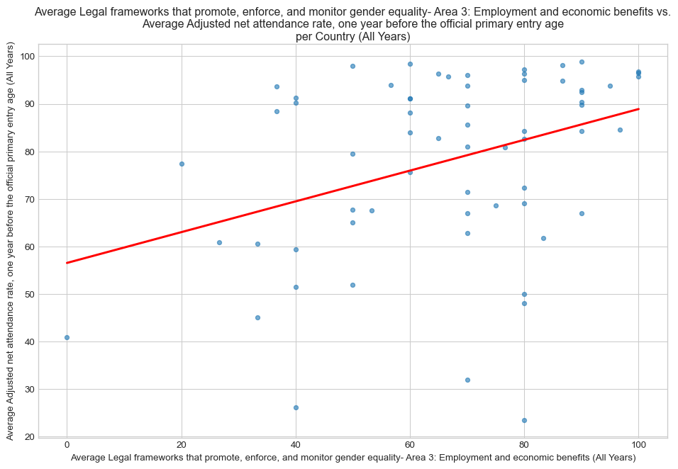
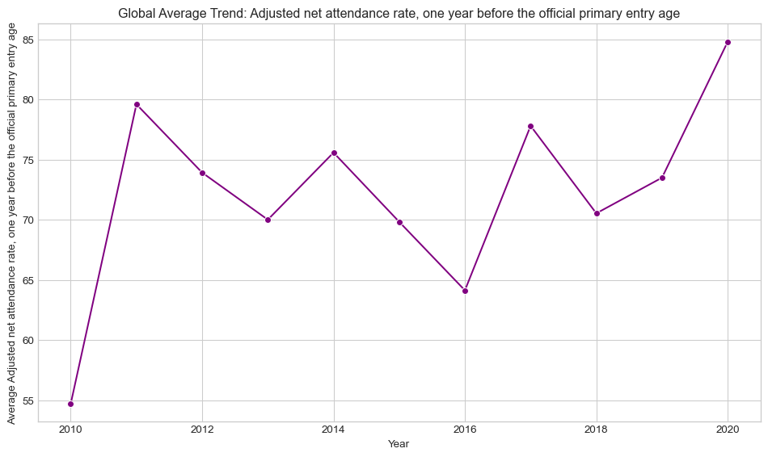

Code
import pandas as pd
import matplotlib.pyplot as plt
import seaborn as sns
import numpy as np
import plotly.express as px # Import Plotly
COUNTRY_COL = 'country'
YEAR_COL = 'time_period'
VALUE_COL_IND1 = 'obs_value'
VALUE_COL_IND2 = 'obs_value'
INDICATOR_NAME_COL = 'indicator'
METADATA_FILE = 'UNICEF Metadata.csv'
METADATA_COUNTRY_COL = 'country'
ISO_CODE_COL = 'alpha_3_code'
SORT_BARS_ASCENDING = True
LIMIT_BAR_CHART_COUNTRIES = 50
def load_and_prepare_data(indicator1_path, indicator2_path, metadata_path):
"""
Loads, cleans, prepares indicator data, extracts names, prepares aggregated scatter data and map data.
Returns cleaned dataframes, aggregated scatter data, map data, latest year, and indicator names.
Returns empty DataFrame or None for any variable that could not be successfully prepared.
"""
indicator1_name = "Indicator 1" # Default names
indicator2_name = "Indicator 2"
latest_year = None
df_ind1_clean = pd.DataFrame()
df_ind2_clean = pd.DataFrame()
df_scatter_agg = pd.DataFrame()
df_map_data = pd.DataFrame() # For choropleth map
df_meta = None # Initialize metadata as None
try:
# --- Load Metadata ---
try:
df_meta = pd.read_csv(metadata_path)
# Check required metadata columns
if METADATA_COUNTRY_COL not in df_meta.columns:
raise KeyError(f"Required metadata column '{METADATA_COUNTRY_COL}' not found.")
if ISO_CODE_COL not in df_meta.columns:
raise KeyError(f"Required metadata column '{ISO_CODE_COL}' (for ISO codes) not found.")
df_meta = df_meta[[METADATA_COUNTRY_COL, ISO_CODE_COL]].dropna().drop_duplicates(subset=[METADATA_COUNTRY_COL])
except FileNotFoundError:
print(f"Warning: Metadata file '{metadata_path}' not found. Choropleth map cannot be generated.")
df_meta = None # Explicitly set to None if not found
except KeyError as e:
print(f"Warning: Error loading metadata: {e}. Choropleth map cannot be generated.")
df_meta = None
except Exception as e:
print(f"Warning: An unexpected error occurred loading metadata: {e}. Choropleth map cannot be generated.")
df_meta = None
# --- Load and Clean Indicator Data ---
cleaned_dfs = {}
extracted_names = {}
indicator_info = {
'Indicator 1': {'path': indicator1_path, 'value_col': VALUE_COL_IND1, 'df': None},
'Indicator 2': {'path': indicator2_path, 'value_col': VALUE_COL_IND2, 'df': None}
}
for key, info in indicator_info.items():
file_path = info['path']
value_col = info['value_col']
default_name = key
try:
df = pd.read_csv(file_path)
required_cols = [COUNTRY_COL, YEAR_COL, value_col]
current_name = default_name
if INDICATOR_NAME_COL in df.columns:
valid_names = df[INDICATOR_NAME_COL].dropna().unique()
if len(valid_names) > 0:
current_name = str(valid_names[0])
if len(valid_names) > 1:
print(f"Warning: Multiple indicator names found in '{file_path}'. Using first: '{current_name}'.")
extracted_names[default_name] = current_name
# Check essential columns after name extraction attempt
core_cols = [COUNTRY_COL, YEAR_COL, value_col]
if not all(col in df.columns for col in core_cols):
missing = [c for c in core_cols if c not in df.columns]
raise KeyError(f"Missing essential column(s) ({', '.join(missing)}) in '{file_path}'")
# Convert year and value to numeric, drop NaNs based on core columns
df[YEAR_COL] = pd.to_numeric(df[YEAR_COL], errors='coerce')
df[value_col] = pd.to_numeric(df[value_col], errors='coerce')
df.dropna(subset=[COUNTRY_COL, YEAR_COL, value_col], inplace=True)
df[YEAR_COL] = df[YEAR_COL].astype(int)
cleaned_dfs[default_name] = df
except FileNotFoundError:
print(f"Error: Indicator file not found: '{file_path}'. Skipping.")
except KeyError as e:
print(f"Error in '{file_path}': {e}. Please check Configuration and CSV files. Skipping.")
except Exception as e:
print(f"An unexpected error occurred processing '{file_path}': {e}. Skipping.")
df_ind1_clean = cleaned_dfs.get('Indicator 1', pd.DataFrame())
df_ind2_clean = cleaned_dfs.get('Indicator 2', pd.DataFrame())
indicator1_name = extracted_names.get('Indicator 1', "Indicator 1")
indicator2_name = extracted_names.get('Indicator 2', "Indicator 2")
# Determine latest year from Indicator 1 if available
latest_year = None
if not df_ind1_clean.empty:
latest_year = int(df_ind1_clean[YEAR_COL].max())
# --- Prepare data for Scatter Plot (Average per Country) ---
if not df_ind1_clean.empty and not df_ind2_clean.empty:
avg_ind1 = df_ind1_clean.groupby(COUNTRY_COL)[VALUE_COL_IND1].mean().reset_index()
avg_ind2 = df_ind2_clean.groupby(COUNTRY_COL)[VALUE_COL_IND2].mean().reset_index()
df_scatter_agg = pd.merge(avg_ind1, avg_ind2, on=COUNTRY_COL, how='inner', suffixes=('_avg_ind1', '_avg_ind2'))
df_scatter_agg = df_scatter_agg.rename(columns={f"{VALUE_COL_IND1}_avg_ind1": 'indicator1_value', f"{VALUE_COL_IND2}_avg_ind2": 'indicator2_value'})
else:
print("Warning: Cannot prepare aggregated scatter plot data due to missing indicator data.")
df_scatter_agg = pd.DataFrame() # Ensure it's an empty DataFrame if data is missing
# --- Prepare data for Choropleth Map (Indicator 1, Latest Year) ---
if df_meta is not None and latest_year is not None and not df_ind1_clean.empty:
df_ind1_latest = df_ind1_clean[df_ind1_clean[YEAR_COL] == latest_year].copy() # Use .copy()
if not df_ind1_latest.empty:
# Handle potential duplicates for the same country in the same year
df_ind1_latest = df_ind1_latest.drop_duplicates(subset=[COUNTRY_COL], keep='first')
# Merge indicator data with metadata on country columns
df_map_data = pd.merge(df_ind1_latest[[COUNTRY_COL, VALUE_COL_IND1]],
df_meta,
left_on=COUNTRY_COL,
right_on=METADATA_COUNTRY_COL,
how='inner')
else:
print(f"Warning: No data for Indicator 1 found for the latest year ({latest_year}). Cannot prepare map data.")
df_map_data = pd.DataFrame() # Ensure it's an empty DataFrame
else:
print("Skipping map data preparation (metadata missing or indicator data/latest year not available).")
df_map_data = pd.DataFrame() # Ensure it's an empty DataFrame
print("--- Data Preparation Complete ---")
return df_ind1_clean, df_ind2_clean, df_scatter_agg, df_map_data, latest_year, indicator1_name, indicator2_name
except Exception as e:
print(f"An unexpected error occurred during overall data loading/preparation: {e}")
# Return empty or None values in case of a high-level error
print("--- Data Preparation Failed ---")
return pd.DataFrame(), pd.DataFrame(), pd.DataFrame(), pd.DataFrame(), None, "Indicator 1", "Indicator 2"
# --- Plotting Functions (Each creates a separate plot) ---
def create_bar_chart(df_ind1, latest_year, ind1_name):
"""Generates a bar chart for Indicator 1 at the latest year."""
if df_ind1.empty or latest_year is None:
print("Skipping Bar Chart: Indicator 1 data or latest year is missing.")
return
print(f"Generating Bar Chart for {ind1_name} ({latest_year})...")
plt.figure(figsize=(12, 7)) # Create a new figure for this plot
plt.style.use('seaborn-v0_8-whitegrid')
data_plot = df_ind1[df_ind1[YEAR_COL] == latest_year].copy()
if not data_plot.empty:
data_plot = data_plot.drop_duplicates(subset=[COUNTRY_COL], keep='first')
data_plot = data_plot.sort_values(by=VALUE_COL_IND1, ascending=SORT_BARS_ASCENDING)
num_countries = len(data_plot)
plot_data = data_plot
if LIMIT_BAR_CHART_COUNTRIES is not None and num_countries > LIMIT_BAR_CHART_COUNTRIES:
print(f"Limiting bar chart to {LIMIT_BAR_CHART_COUNTRIES} countries out of {num_countries} for readability.")
plot_data = data_plot.head(LIMIT_BAR_CHART_COUNTRIES)
if not plot_data.empty:
sns.barplot(data=plot_data, x=COUNTRY_COL, y=VALUE_COL_IND1, palette='viridis')
plt.title(f'{ind1_name} per Country - {latest_year}', wrap=True); plt.xlabel('Country'); plt.ylabel(f'{ind1_name}')
plt.xticks(rotation=90, fontsize=8); plt.ylim(bottom=0)
plt.tight_layout() # Adjust layout for this single plot
plt.show() # Display this specific plot
print("Bar Chart generated.")
else:
print(f"No data available for {ind1_name} in {latest_year} after filtering.")
plt.close() # Close the empty figure
else:
print(f"No data available for {ind1_name} in {latest_year}.")
plt.close() # Close the empty figure
def create_indicator1_trend(df_ind1, ind1_name):
"""Generates a global average trend line plot for Indicator 1."""
if df_ind1.empty:
print("Skipping Indicator 1 Trend Plot: Indicator 1 data is missing.")
return
print(f"Generating Global Avg Trend Plot for {ind1_name}...")
plt.figure(figsize=(10, 6)) # Create a new figure
plt.style.use('seaborn-v0_8-whitegrid')
trend_data = df_ind1.groupby(YEAR_COL)[VALUE_COL_IND1].mean().reset_index()
if not trend_data.empty:
sns.lineplot(data=trend_data, x=YEAR_COL, y=VALUE_COL_IND1, marker='o')
plt.title(f'Global Average Trend: {ind1_name}', wrap=True); plt.xlabel('Year'); plt.ylabel(f'Average {ind1_name}')
plt.tight_layout()
plt.show() # Display this specific plot
print("Indicator 1 Trend Plot generated.")
else:
print(f"No time series data available for {ind1_name}.")
plt.close() # Close the empty figure
def create_scatter_plot(df_scatter_agg, ind1_name, ind2_name):
"""Generates a scatter plot comparing average Indicator 1 and Indicator 2 per country."""
if df_scatter_agg is None or df_scatter_agg.empty:
print("Skipping Scatter Plot: Aggregated scatter data is missing or empty.")
return
# Check if there's enough unique data for a meaningful scatter plot
if df_scatter_agg['indicator1_value'].nunique() <= 1 or df_scatter_agg['indicator2_value'].nunique() <= 1:
print(f"Skipping Scatter Plot: Insufficient unique values in scatter data ({df_scatter_agg['indicator1_value'].nunique()} unique {ind1_name}, {df_scatter_agg['indicator2_value'].nunique()} unique {ind2_name}). Need > 1 unique value for both.")
return
print(f"Generating Scatter Plot: Avg {ind1_name} vs Avg {ind2_name}...")
plt.figure(figsize=(10, 7)) # Create a new figure
plt.style.use('seaborn-v0_8-whitegrid')
sns.regplot(data=df_scatter_agg, x='indicator1_value', y='indicator2_value', scatter_kws={'alpha':0.6, 's': 20}, line_kws={'color':'red'}, ci=None)
plt.title(f'Average {ind1_name} vs. Average {ind2_name}\nper Country (All Years)', wrap=True); plt.xlabel(f'Average {ind1_name} (All Years)'); plt.ylabel(f'Average {ind2_name} (All Years)')
plt.tight_layout()
plt.show() # Display this specific plot
print("Scatter Plot generated.")
def create_indicator2_trend(df_ind2, ind2_name):
"""Generates a global average trend line plot for Indicator 2."""
if df_ind2.empty:
print("Skipping Indicator 2 Trend Plot: Indicator 2 data is missing.")
return
print(f"Generating Global Avg Trend Plot for {ind2_name}...")
plt.figure(figsize=(10, 6)) # Create a new figure
plt.style.use('seaborn-v0_8-whitegrid')
trend_data = df_ind2.groupby(YEAR_COL)[VALUE_COL_IND2].mean().reset_index()
if not trend_data.empty:
sns.lineplot(data=trend_data, x=YEAR_COL, y=VALUE_COL_IND2, marker='o', color='purple')
plt.title(f'Global Average Trend: {ind2_name}', wrap=True); plt.xlabel('Year'); plt.ylabel(f'Average {ind2_name}')
plt.tight_layout()
plt.show() # Display this specific plot
print("Indicator 2 Trend Plot generated.")
else:
print(f"No time series data available for {ind2_name}.")
plt.close() # Close the empty figure
def create_choropleth_map(df_map, iso_code_col, color_col, hover_col, ind_name, year):
"""Generates an interactive choropleth map using Plotly."""
if df_map is None or df_map.empty:
print("Skipping Choropleth map generation: Map data is missing or empty.")
return
try:
fig = px.choropleth(df_map,
locations=iso_code_col, # Column with ISO alpha-3 codes (e.g., 'alpha_3_code')
color=color_col, # Column with data values (e.g., 'obs_value')
hover_name=hover_col, # Column for country name tooltip (e.g., 'country')
color_continuous_scale=px.colors.sequential.Viridis, # Color scale
title=f'{ind_name} ({year})')
fig.update_layout(margin={"r":0,"t":50,"l":0,"b":0}) # Adjust margins for better display
fig.show() # Display the Plotly figure in the default environment
print("Choropleth map generated.")
except Exception as e:
print(f"Error generating choropleth map: {e}")
# --- Main Execution ---
if __name__ == "__main__":
# Define the paths to your data files
file_ind1 = 'UNICEF Indicator 1.csv'
file_ind2 = 'UNICEF Indicator 2.csv'
# Load and prepare data (this step is essential for all plots)
df_ind1_all, df_ind2_all, df_scatter_agg_data, df_map_prepared_data, latest_yr, name1, name2 = load_and_prepare_data(
file_ind1, file_ind2, METADATA_FILE
)
# Call the individual plotting functions if the necessary data was loaded
# Plot 1: Bar Chart (Indicator 1, Latest Year)
create_bar_chart(df_ind1_all, latest_yr, name1)
# Plot 2: Trend Line (Indicator 1, Global Average)
create_indicator1_trend(df_ind1_all, name1)
# Plot 3: Scatter Plot (Avg Indicator 1 vs Avg Indicator 2)
create_scatter_plot(df_scatter_agg_data, name1, name2)
# Plot 4: Trend Line (Indicator 2, Global Average)
create_indicator2_trend(df_ind2_all, name2)
# Plot 5: Choropleth Map (Indicator 1, Latest Year)
# Uses the map data prepared in load_and_prepare_data
create_choropleth_map(df_map=df_map_prepared_data,
iso_code_col=ISO_CODE_COL, # Column in df_map_prepared_data with ISO codes
color_col=VALUE_COL_IND1, # Column in df_map_prepared_data with values for coloring
hover_col=COUNTRY_COL, # Column for hover tooltip
ind_name=name1, # Use the extracted name for Indicator 1
year=latest_yr)
print("\n--- Plot Generation Complete ---")--- Data Preparation Complete ---
Generating Bar Chart for Legal frameworks that promote, enforce, and monitor gender equality- Area 3: Employment and economic benefits (2022)...
Limiting bar chart to 50 countries out of 119 for readability.
Bar Chart generated.
Generating Global Avg Trend Plot for Legal frameworks that promote, enforce, and monitor gender equality- Area 3: Employment and economic benefits...
Indicator 1 Trend Plot generated.
Generating Scatter Plot: Avg Legal frameworks that promote, enforce, and monitor gender equality- Area 3: Employment and economic benefits vs Avg Adjusted net attendance rate, one year before the official primary entry age...
Scatter Plot generated.
Generating Global Avg Trend Plot for Adjusted net attendance rate, one year before the official primary entry age...
Indicator 2 Trend Plot generated.Choropleth map generated.
--- Plot Generation Complete ---